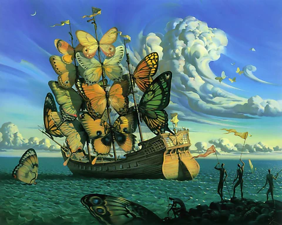
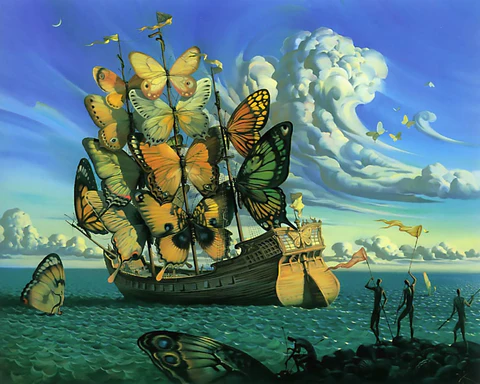

Γεια σας! Είμαι η Κωνσταντίνα Δεληβέρη.
Απόφοιτη Πληροφορικής του Ιονίου Πανεπιστημίου και Ειδικός Εξυπηρέτησης Εταιρικών Πελατών στη Vodafone Ελλάδας.
Μου αρέσει να λύνω προβλήματα της καθημερινότητας και να βοηθάω ανθρώπους να ξεπερνούν τις προκλήσεις τους — είναι κάτι που με γεμίζει και μου δίνει κίνητρο. Ο προγραμματισμός, η τεχνητή νοημοσύνη και η ρομποτική είναι τομείς που με ενθουσιάζουν και με εμπνέουν συνεχώς να εξελίσσομαι. Πιστεύω στη συνεχή μάθηση και φροντίζω να αναπτύσσω διαρκώς τόσο τις τεχνικές μου δεξιότητες όσο και την προσωπικότητά μου. Ό,τι αναλαμβάνω το φέρνω εις πέρας με συνέπεια, υπευθυνότητα και επαγγελματισμό — όχι απλώς για να το ολοκληρώσω, αλλά για να το παραδώσω με ποιότητα και φροντίδα. Η δουλειά μου είναι για μένα αντανάκλαση του χαρακτήρα μου: αφοσίωση, υπευθυνότητα και διαρκής προσπάθεια για το καλύτερο. Εκτός από τις τεχνικές γνώσεις, έχω αναπτύξει και ουσιαστικές soft skills, όπως η αποτελεσματική επικοινωνία, η ενσυναίσθηση, η συνεργασία και η σωστή διαχείριση χρόνου. Μου αρέσει να δουλεύω με ομάδες, να οργανώνω πράγματα με μεθοδικότητα και να διασφαλίζω πως όλοι —άνθρωποι και έργα— αντιμετωπίζονται με σεβασμό.
Επαγγελματική Εμπειρία
Εξυπηρέτηση Εταιρικών Πελατών – Vodafone
Ιούνιος 2024 – Παρόν
Παροχή υποστήριξης σε εταιρικούς πελάτες με έμφαση στην αποτελεσματική επίλυση προβλημάτων και τη διαχείριση αιτημάτων με συνέπεια και ταχύτητα.
IT - Τεχνική Υποστήριξη
Σεπτέμβριος 2019 – Παρόν
Τεχνική υποστήριξη και συντήρηση ηλεκτρονικών υπολογιστών και φορητών συσκευών, διαμόρφωση συστημάτων (format) και δημιουργία ιστοσελίδων.
Γραμματειακή Υποστήριξη στο ΙΔΙΩΤΙΚΟ ΚΤΕΟ ΚΑΡΔΙΤΣΑΣ Α.Ε
Σεπτέμβριος 2023 – Οκτώμβριος 2023
Διαχείριση γραμματείας και διοικητικών καθηκόντων, με έμφαση στην εξυπηρέτηση και υποστήριξη πελατών.
Πρακτική Άσκηση στο Γενικό Νοσοκομείο Κέρκυρας
Ιούνιος 2019 – Αύγουστος 2019
Υποστήριξη στο τμήμα πληροφορικής και συμμετοχή στον σχεδιασμό και τη διαχείριση περιεχομένου της νέας ιστοσελίδας του νοσοκομείου.
Education & Skills
Πτυχίο στην Επιστήμη της πληροφορικής, Τμήμα Πληροφορικής, Ιόνιο Πανεπιστήμιο
2015 – 2025
Γλώσσες Προγραμματισμού & Γνώσεις Υπολογιστή
| Κατηγορία | Τεχνολογίες |
|---|---|
| Γλώσσες Προγραμματισμού | Python, HTML5, CSS3, JavaScript, C, C++, C#, SQL |
| Ψηφιακά Εργαλεία Οργάνωσης | Microsoft Word, Excel, PowerPoint, Outlook, Gmail, Google Cloud, GitHub |
| Software | Oracle Siebel CRM, RapidMiner Studio, MATLAB |
| Εργαλεία DevOps και Παρακολούθησης | Docker, Kibana, Logstash |
| Λειτουργικά Συστήματα | Microsoft Windows 11/10/8/7/XP, Linux/Ubuntu |
| Επεξεργασία Ψηφιακών Μέσων | Adobe Premiere Pro 2020 |
| Γλώσσα | Βαθμός Γνώσης |
|---|---|
| Ελληνικά | Άριστα |
| Αγγλικά | Πολύ καλά |
| Γαλλικά | Καλά |
Βιογραφικό στα Ελληνικά
Βιογραφικό στα Αγγλικά
Έργα-Δημιουργίες
Επιστημονικές Δημοσιεύσεις
Machine Learning on Wikipedia Text for the Automatic Identification of Vocational Domains of Significance for Displaced Communities.
November, 2022
Read MoreVocational Domain Identification with Machine Learning and Natural Language Processing on Wikipedia Text: Error Analysis and Class Balancing.
May, 2023
Read MoreΠροσωπικά Projects
Sub-language Vocabulary
Type: Πτυχιακή Εργασία
Έρευνα στον τομέα της μηχανικής μάθησης με στόχο την εξαγωγή εξειδικευμένων όρων από πέντε διαφορετικά επαγγελματικά πεδία. Κατά την υλοποίηση δημιουργήθηκαν πέντε θεματικά λεξικά, το καθένα περιλαμβάνοντας τους όρους που εξήχθησαν από τα αντίστοιχα υποσύνολα δεδομένων. Παράλληλα, αναπτύχθηκε αυτόνομο εργαλείο μετάφρασης σε Python, το οποίο αξιοποιεί την υπηρεσία Google Translate για την αυτόματη μετάφραση των όρων σε πολλαπλές γλώσσες.
Text to Speech and Speech Recognition
Technologies: Web Speech API, Node.js, HTML, CSS
Διαδικτυακή Εφαρμογή Φωνητικής Αλληλεπίδρασης (TTS & STT). Δημιουργία web εφαρμογής με χρήση του Web Speech API, προσφέροντας δύο βασικές λειτουργίες: Ανάγνωση Κειμένου (Text-to-Speech): Ο χρήστης μπορεί να εισάγει ή να ανεβάσει αρχείο κειμένου/PDF και να ακούσει το περιεχόμενο μέσω φωνητικής αναπαραγωγής από τον browser. Αναγνώριση Ομιλίας (Speech-to-Text): Ο χρήστης μιλά και η εφαρμογή μετατρέπει την ομιλία του σε κείμενο, με δυνατότητα αποθήκευσης του αρχείου. Η εφαρμογή φιλοξενείται στο GitHub και είναι διαθέσιμη μέσω Koyeb.
Galactic Runner – 2.5D Διαστημικό Endless Runner
Technologies: Unity, C#
Ένα παιχνίδι τύπου endless runner σε περιβάλλον διαστήματος, ανεπτυγμένο σε Unity, με 2.5D αισθητική. Ο παίκτης ελέγχει έναν αστροναύτη που συλλέγει εξωγήινους λίθους, αποφεύγει εμπόδια, χρησιμοποιεί διαστημικές πύλες και ξεκλειδώνει ικανότητες μέσα από κατάστημα του παιχνιδιού.
Interests
Αγαπημένο Απόφθεγμα
“Το νόημα της ζωής είναι να βρεις το ταλέντο σου. Ο σκοπός της ζωής είναι να το προσφέρεις στους άλλους.” – Pablo Picasso
Αγαπημένοι Πίνακες
 
